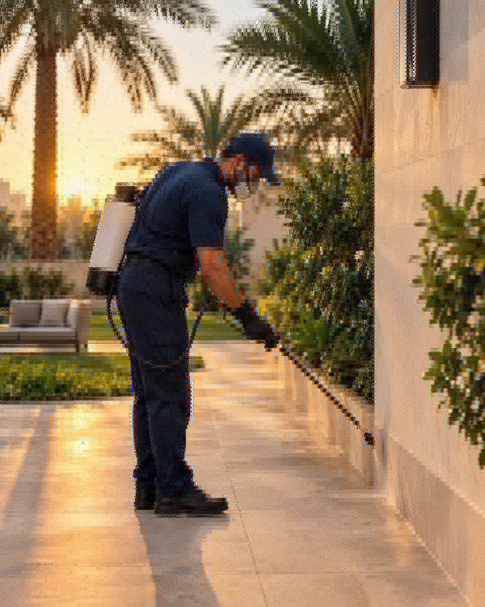
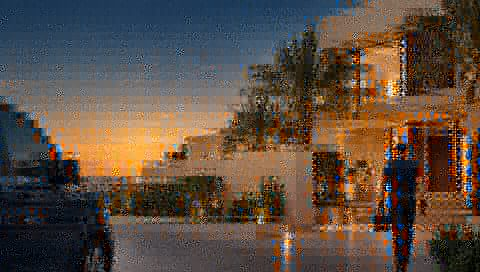

من نحن
فريق يواظب على الجودة في كل خدمة
سيرفو ليست ورشةً ولا وسيطاً عاديّاً — إنها نظام خدمات منزلية يجمع بين التدريب الدقيق، والمعايير المكتوبة، والمتابعة حتى اكتمال المهمة.
لماذا اخترنا التميّز؟
الخدمات المنزلية في البحرين تعتمد على الثقة أكثر من أي قطاع آخر: الفني يدخل بيتك، يستخدم أدواتك، ويتعامل مع عائلتك. لهذا قررنا أن نبني سيرفو على ثلاثة أسس لا تغيّرها السرعة:
قدرات مكتوبة. كل خدمتنا موصوفة بمعايير واضحة قبل أن تصل الرسالة. لا اعتماد على «سنشوف بالوقت».
تدقيق قبل وبعد. كل مهمة تمر بفحص قبل البدء وبعد الانتهاء، وتُوثَّق بوقت محدد في النظام.
تواصل مباشر. من أول رسالة، تتحدث مع الفريق نفسه الذي سيقوم بالعمل — لا وسطاء ولا تحويل مكالمات.

كيف نواظب على الجودة؟
الجودة عندنا ليست شعاراً — إنها إجراءات موحدة. نبدأ كل مهمة بتقييم مكتوب، نلتزم بوقت محدد، وننسفها بمعايير نجاح واضحة قبل أن نغادر. ما نوثّقه في التقرير نفسه يبقى مرجعاً يمكنك الرجوع إليه لاحقاً.